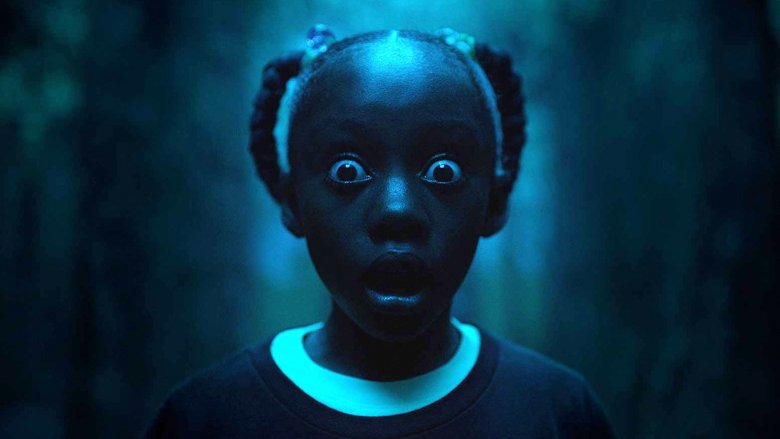
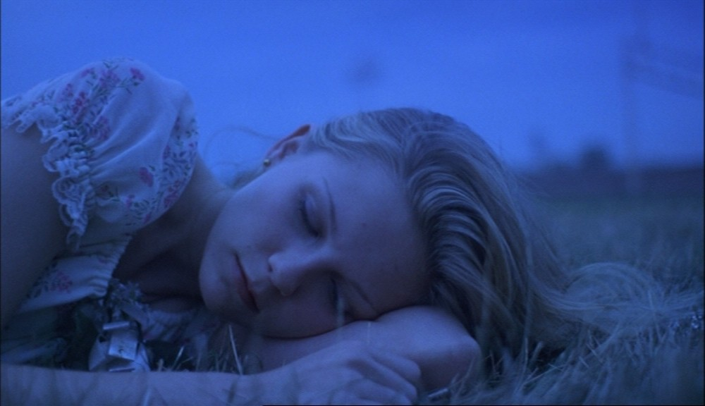
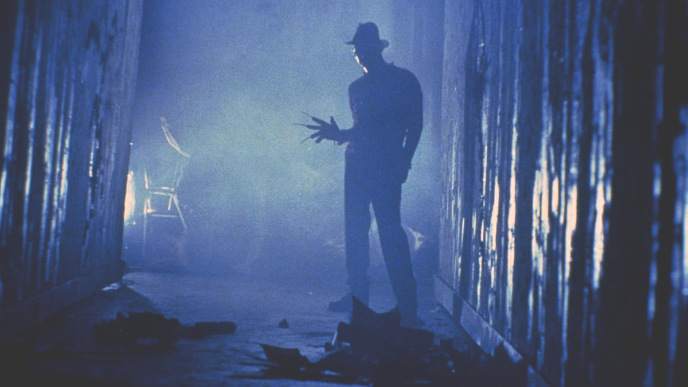
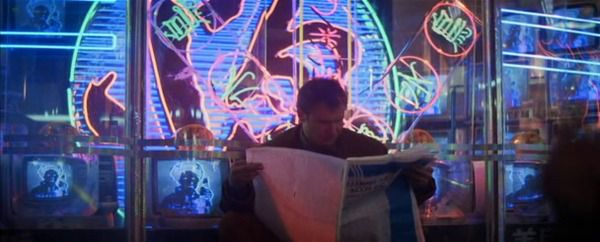
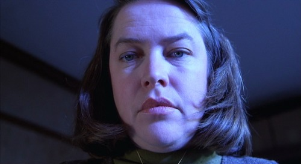
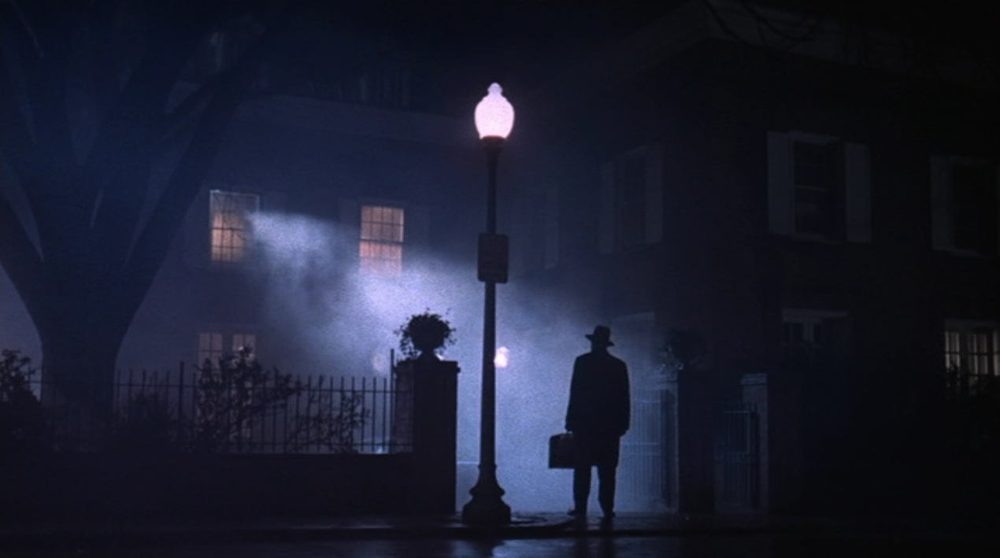
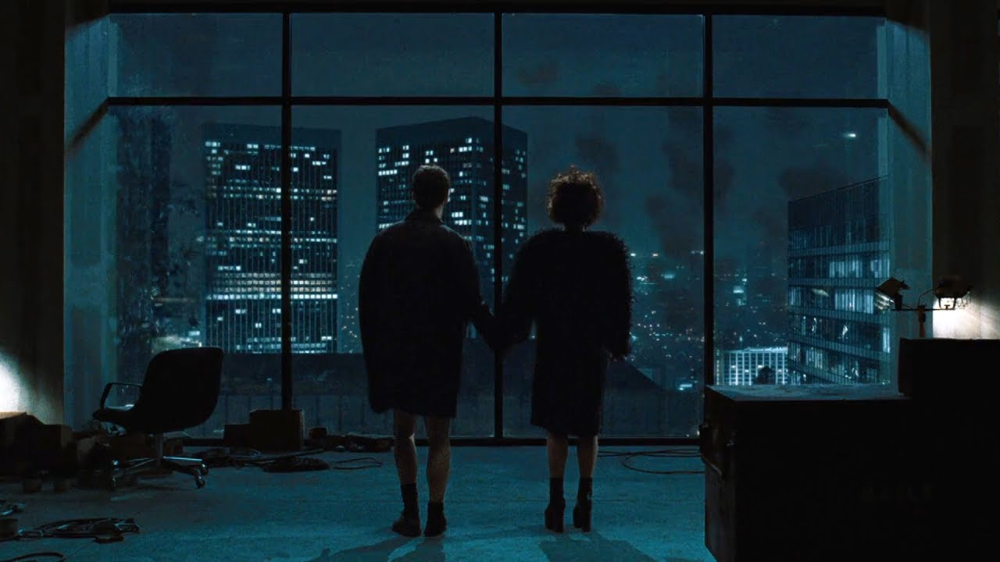
 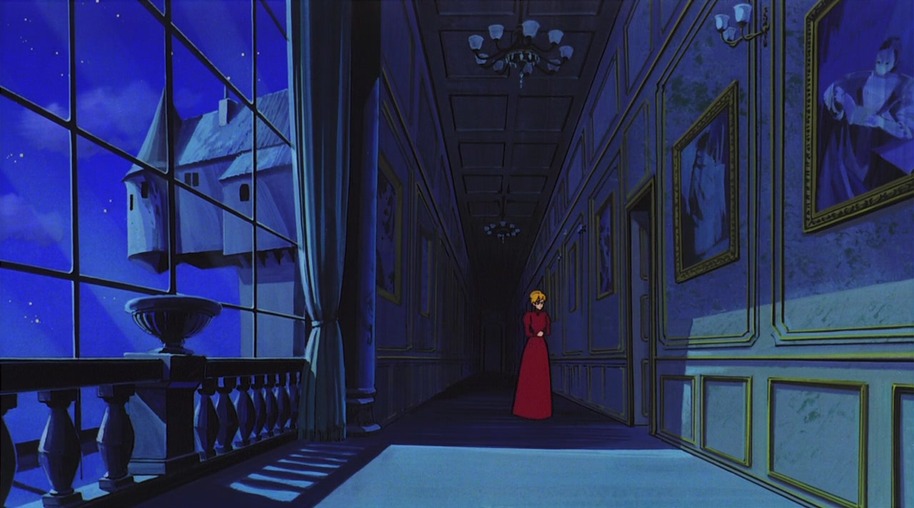
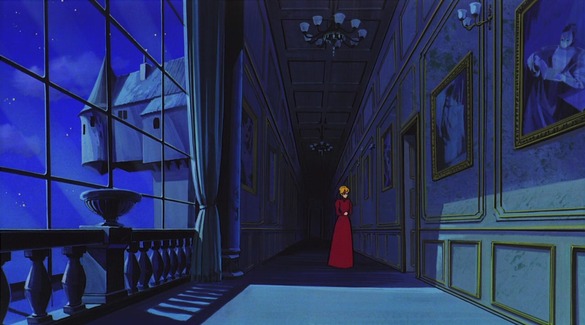
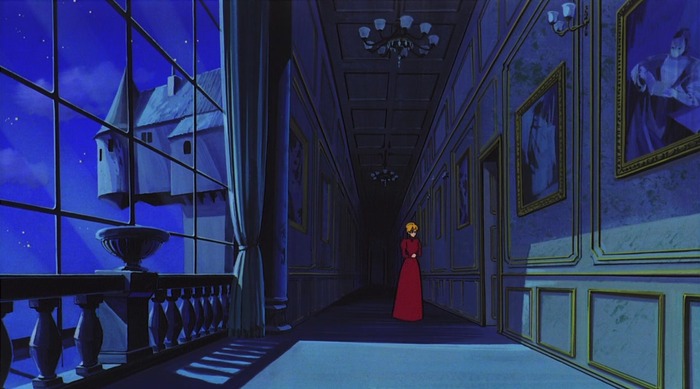
blue ~ the unknown
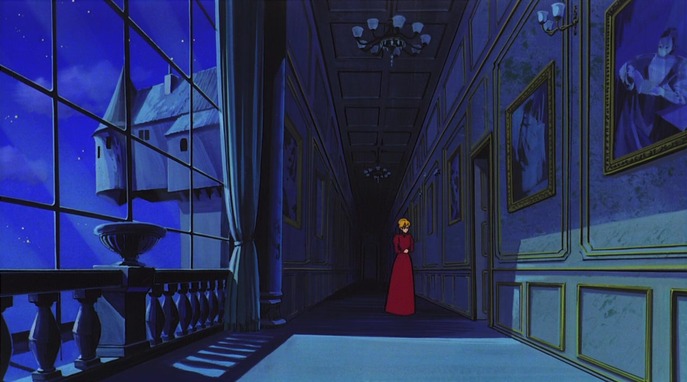
blue is a complex color and can mean many different things. usually, blue represents stability, tranquility, and sadness, however in film it often represents the unknown. it can represent an unfamiliar location or situation (Jaws, Blade Runner, The Exorcist), a failure to distinguish between reality and imagination (Black Swan, Fight Club), a mysterious personality (Misery, The Virgin Suicides, Audition), or difficulty with self-reflection (Moonlight, Lost in Translation). overall, in film it means quite the opposite of stability, and can mean that something is off. when blue is present in a scene, it's usually an indication that there is physical, mental, or emotional turmoil present in the plot that the main character has to overcome.
if you are :
flighty
unsure of yourself
adaptable
you are a blue character!